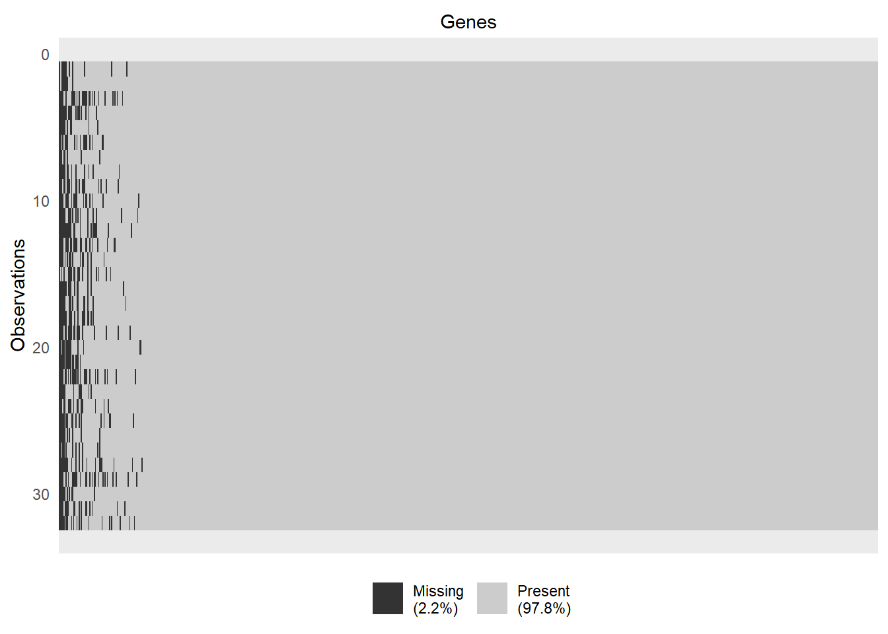
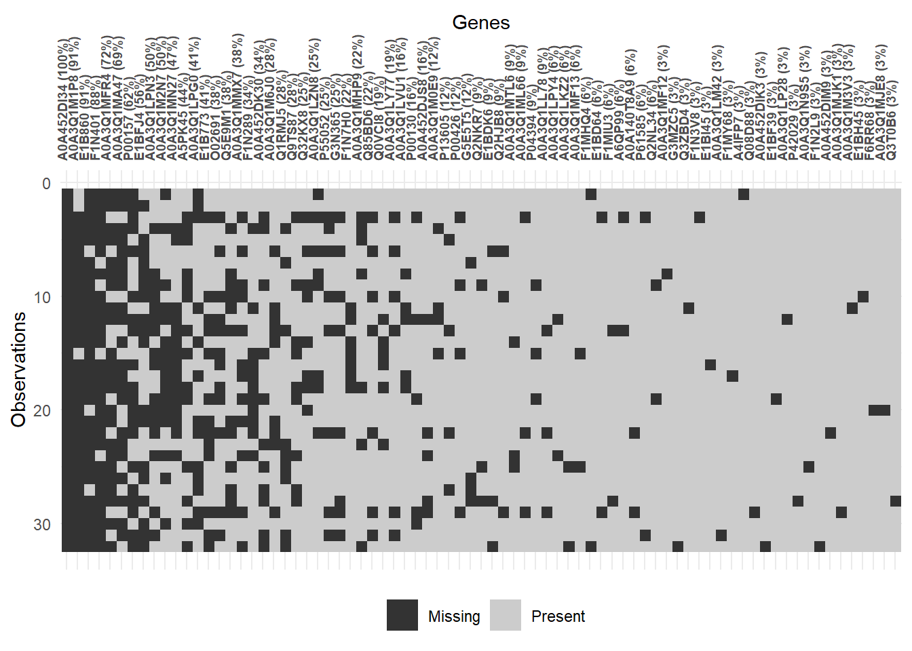

# #| eval: false
#
# pacman::p_load(tidyverse)
# quant_data <- read.csv("data/sample_lfq_data.csv")
# # s_data <- read.csv("data/sample_metadata.csv") # sample_attributesdown stream proteomics workflow for meat science
0.1 Naming Idea

1 Importing Data
1.1 Gene ID has multiple entries one cell
1.1.1 Importing Raw Data
1.1.2 Enriching/populating the feature data
# #| eval: false
#
# # pacman::p_load(tidyverse, modules, httr, jsonlite)
# # multipleAccessionHandling <- use("R/01_multipleAccessionHandling.R")
# source("R/01_multipleAccessionHandling.R")
#
#
# f_quant_data <- getCleanAccession(quant_data, "Accession", "\\b[A-Za-z0-9]+(?=\\|)")
#
# r_data <- populateGeneNamesfromMultipleAccession(f_data, "Accession", ",", information = "accession,gene_primary,gene_synonym,organism_name,protein_name,sequence", countAccession = countAccession, getGeneUniProt = getGeneUniProt, getGeneInformationforMultipleAccession = getGeneInformationforMultipleAccession, verbose_ = FALSE)1.2
# #| eval: false
#
# pacman::p_load(import, glue, httr, progress)
#
# # write.csv(r_data[, c(1, 7:ncol(r_data))],"data/quant_data.csv", row.names = FALSE)
#
# write.csv(r_data[, 1:6], "data/feature_data.csv", row.names = FALSE)1.3 Gene ID has single entries in cell
1.3.1 Importing Raw Data
pacman::p_load(tidyverse)
feature_key_column <- "Accession"
quantdata_key_column <- "Accession"
sample_key_column <- "sample" # quantColsquant_data <- read.csv("data/quant_data.csv") #%>% # LFQ quantified data
# column_to_rownames(var = feature_key_column) # make the first column as row name
f_data <- read.csv("data/feature_data.csv") #%>% # feature_attributes, primary key (unique) should be uniprot accession gene id
# column_to_rownames(var = feature_key_column)
s_data <- read.csv("data/sample_data.csv") %>%
mutate(across(all_of(sample_key_column), make.names)) %>%
# column_to_rownames(var = sample_key_column) %>%
dplyr::rename(quantCols = sample_key_column)Warning: Using an external vector in selections was deprecated in tidyselect 1.1.0.
ℹ Please use `all_of()` or `any_of()` instead.
# Was:
data %>% select(sample_key_column)
# Now:
data %>% select(all_of(sample_key_column))
See <https://tidyselect.r-lib.org/reference/faq-external-vector.html>.2 Preparing a QFeature object
2.1 Creating the QFeature object
pacman::p_load(BiocManager) # will go to global environment
pacman::p_load(QFeatures)
# creating assayData
assayData <- f_data %>%
full_join(quant_data, by = feature_key_column)
# name for the assay
initial_assayName <- "proteomics_data"
# creating QFeature object
data <- readQFeatures(
assayData,
quantCols = (ncol(f_data)+1):ncol(assayData),
fnames = feature_key_column,
colData = s_data,
name = initial_assayName
)Checking arguments.Loading data as a 'SummarizedExperiment' object.Formatting sample annotations (colData).Formatting data as a 'QFeatures' object.# adding column details also for summarizedExperiment object
colData(data[[initial_assayName]]) <- colData(data)2.2 Inspecting the QFeature Object
# QFeature object
dataAn instance of class QFeatures containing 1 assays:
[1] proteomics_data: SummarizedExperiment with 755 rows and 32 columns # summarizedExperiment Object
data[[initial_assayName]]class: SummarizedExperiment
dim: 755 32
metadata(0):
assays(1): ''
rownames(755): A0A3Q1M2L8 Q3ZC07 ... A5D9E8 F1N690
rowData names(6): Accession Gene_primary ... Protein_name Sequence
colnames(32): X4087_10_255_LT X4088_12_259 ... X4147_64_330_LT
X4148_62_324
colData names(3): quantCols Feeding_Regime Slaughter_Condition# row data (features) information
head(rowData(data[[initial_assayName]]), 3)DataFrame with 3 rows and 6 columns
Accession Gene_primary Gene_synonym Organism_name Protein_name
<character> <character> <character> <character> <character>
A0A3Q1M2L8 A0A3Q1M2L8 TOP2B NA Bos taurus... DNA topois...
Q3ZC07 Q3ZC07 ACTC1 ACTC Bos taurus... Actin, alp...
A0A3Q1M9X9 A0A3Q1M9X9 PTPN14 NA Bos taurus... Protein ty...
Sequence
<character>
A0A3Q1M2L8 MWVYDEDVGM...
Q3ZC07 MCDDEETTAL...
A0A3Q1M9X9 MPFGLKLRRT...# col data (samples) information
head(colData(data[[initial_assayName]]), 3) #summarizedExperiment objectDataFrame with 3 rows and 3 columns
quantCols Feeding_Regime Slaughter_Condition
<character> <character> <character>
X4087_10_255_LT X4087_10_2... Lipid NoStress
X4088_12_259 X4088_12_2... Lipid NoStress
X4089_24_270 X4089_24_2... Lipid NoStress# col data (samples) information
head(colData(data), 3) # QFeature objectDataFrame with 3 rows and 3 columns
quantCols Feeding_Regime Slaughter_Condition
<character> <character> <character>
X4087_10_255_LT X4087_10_2... Lipid NoStress
X4088_12_259 X4088_12_2... Lipid NoStress
X4089_24_270 X4089_24_2... Lipid NoStress# assay data
head(assay(data[[initial_assayName]]), 2) X4087_10_255_LT X4088_12_259 X4089_24_270 X4107_44_268_LT
A0A3Q1M2L8 708674.7 651387.5 640716.3 605496.1
Q3ZC07 43815348.1 77775446.2 29781602.0 51451617.0
X4095_2_265 X4096_15_260 X4090_22_302 X4091_23_282 X4092_1_308
A0A3Q1M2L8 462056.4 596891.6 273604.5 394407.6 372989.6
Q3ZC07 38834227.6 45409152.5 85496006.1 54179612.2 76447864.7
X4093_3_316 X4094_14_320 X4108_42_297 X4109_34_301 X4110_18_311
A0A3Q1M2L8 330667.9 337589.7 632592.1 604599.6 481858
Q3ZC07 54079415.3 48040680.7 37724931.3 55162289.4 32403738
X4111_29_305 X4112_35_321 X4113_17_277 X4114_21_267 X4115_25_275
A0A3Q1M2L8 534242.1 548742.2 434293.6 534974.3 377543.1
Q3ZC07 60325364.8 54716847.9 37505829.0 63223584.1 43973070.7
X4116_20_286 X4127_39_304_LT X4128_33_280 X4129_31_314 X4130_52_331
A0A3Q1M2L8 407411.9 397311.2 619823.4 461125.6 588833.2
Q3ZC07 31270801.7 30505421.8 52353566.4 35614246.8 43615578.4
X4131_47_251 X4132_55_269 X4133_51_258 X4134_37_287 X4135_45_303
A0A3Q1M2L8 516580.9 422994.9 593874.7 470973.2 603675.9
Q3ZC07 30286412.4 55827616.3 39881508.0 52794107.8 47972250.3
X4136_43_299 X4147_64_330_LT X4148_62_324
A0A3Q1M2L8 597141.1 659786.6 812408.9
Q3ZC07 19705375.8 19975536.4 9576858.0# QFeature object
message(" QFeature object")
data
# summarizedExperiment Object
message("\n \n summarizedExperiment Object")
data[[initial_assayName]]
# row data (features) information
message("\n \n row data (features) information")
head(rowData(data[[initial_assayName]]), 3)
# col data (samples) information
message("\n col data (samples) information (summarizedExperiment object)")
head(colData(data[[initial_assayName]]), 3) #summarizedExperiment object
message("\n col data (samples) information (QFeature object)")
head(colData(data), 3) # QFeature object
# assay data
message("\n \n assay data")
head(assay(data[[initial_assayName]]), 2)
message("\n \n Warning: We are printing less rows for a better viewing using head() function.")3 Pre-processing of the data
3.1 Missing value Handling
3.1.1 Missing value exploration and visualization
# Exploring missing values
data[[initial_assayName]] <- zeroIsNA(data[[initial_assayName]])
NA_data <- nNA(data[[initial_assayName]])
NA_data$nNA
DataFrame with 1 row and 2 columns
nNA pNA
<integer> <numeric>
1 532 0.0220199
$nNArows
DataFrame with 755 rows and 3 columns
name nNA pNA
<character> <integer> <numeric>
1 A0A3Q1M2L8 0 0
2 Q3ZC07 0 0
3 A0A3Q1M9X9 0 0
4 E1B9H3 0 0
5 A0A452DIB2 0 0
... ... ... ...
751 P04260 0 0
752 A0A3Q1N1B8 0 0
753 A0A3Q1MHL7 0 0
754 A5D9E8 0 0
755 F1N690 0 0
$nNAcols
DataFrame with 32 rows and 3 columns
name nNA pNA
<character> <integer> <numeric>
1 X4087_10_2... 11 0.0145695
2 X4088_12_2... 8 0.0105960
3 X4089_24_2... 26 0.0344371
4 X4107_44_2... 18 0.0238411
5 X4095_2_26... 11 0.0145695
... ... ... ...
28 X4134_37_2... 20 0.0264901
29 X4135_45_3... 26 0.0344371
30 X4136_43_2... 11 0.0145695
31 X4147_64_3... 18 0.0238411
32 X4148_62_3... 19 0.0251656# Visualizing the whole data
pacman::p_load(naniar)
vis_miss(as.data.frame(t(assay(data[[initial_assayName]]))), sort_miss = TRUE, show_perc_col = FALSE) +
labs(x = "Genes") +
theme(axis.text.x = element_blank())
col_with_missingval <- as.data.frame(t(assay(data[[initial_assayName]]))) %>%
select(where(~ any(is.na(.))))
vis_miss(col_with_missingval, sort_miss = TRUE, show_perc = FALSE) +
labs(x = "Genes") +
theme(axis.text.x = element_text(face="bold", size = 7, angle = 90))
3.1.2 Missing data filterting
Filtering features having more than 10% missing data.
# removing missing value more than 10%, can be changed accordingly
NA_filtered_assayName <- paste0("NAfiltered_", initial_assayName)
data <- addAssay(data,
filterNA(
data[[initial_assayName]],
pNA = 0.1
),
name = NA_filtered_assayName)3.1.3 Missing Data Imputation
3.1.3.1 Log transformation for easy visualization
log_NA_filtered_assayName <- paste0("log_",NA_filtered_assayName)
data <- addAssay(data,
logTransform(data[[NA_filtered_assayName]]),
name = "log_NAfiltered_proteins")3.1.3.2 Imputing missing values and visualization
source("R/02_QFeature_related functions.R")
# fix the function
visualize_imputation_density(data,
protein_column = NA_filtered_assayName,
imputation_methods = c("knn", "zero", "MinDet", "bpca"),
colors = c("black", "red", "blue", "steelblue", "orange"),
legend_position = "topright")